Chi siamo
El Ouali Bologna, per la libertà per il Sahara Occidentale è un'organizzazione di volontariato nata nel gennaio 2000 che opera con l'obiettivo di promuovere ed organizzare iniziative di solidarietà, di aiuto umanitario, economico, sanitario e medico, a sostegno della popolazione Saharawi.
Il nome è preso da El Ouali Mustapha Sayed, uno dei primi e più importanti leader Saharawi. El Ouali Bologna fa parte della Rete Saharawi ODV, rete di ODV, onlus e ONG italiane solidali con il popolo Saharawi.
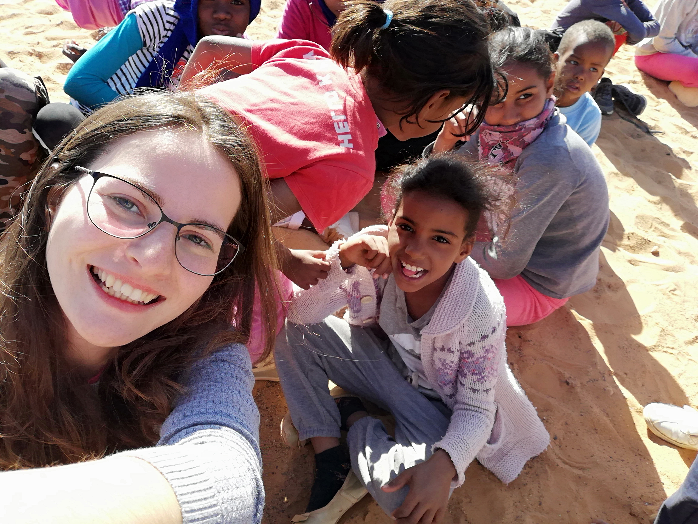
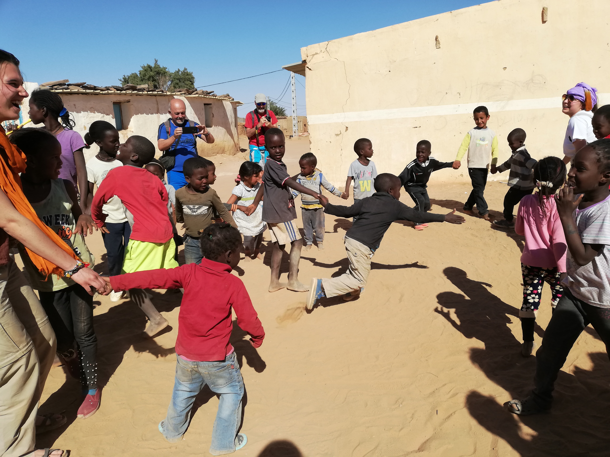
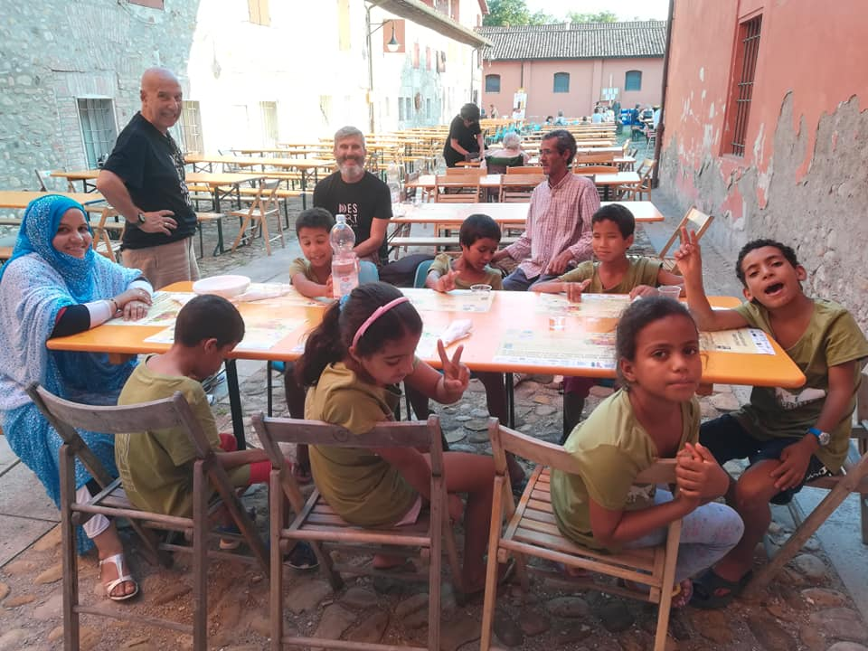
Cosa facciamo
Nei campi profughi
L'organizzazione svolge principalmente attività in Algeria, per sostenere economicamente le famiglie che vivono nei campi profughi nei pressi di Tindouf. I campi sono strutturati in 4 province (Wilayas), 25 comuni (Dairas) e 3 scuole residenziali. Le wilaya e le daira hanno nomi di città e località del Sahara Occidentale, occupate dalle truppe marocchine, per porre l'accento sullo stretto legame con la propria terra d'origine.
Laboratorio di ceramica "Giocare con l'arte"
Un laboratorio destinato a bambini con e senza disabilità della Wilaya di Samra seguiti da insegnanti che, grazie al progetto, percepiscono uno stipendio mensile. Uno dei principali sostenitori del progetto è Ecomaratona del Chianti.
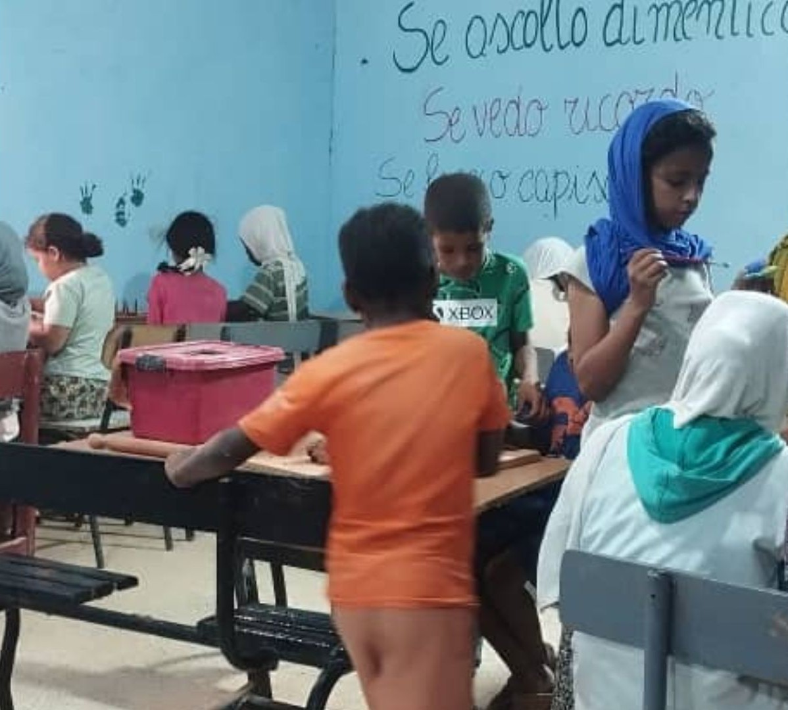
Scuola di inglese
Dal 2019 è attivo nella Wilaya di Dakhla un corso di inglese che coinvolge una ventina di ragazzi. Il corso è tenuto da un insegnante di inglese che, grazie al progetto, percepisce uno stipendio mensile.
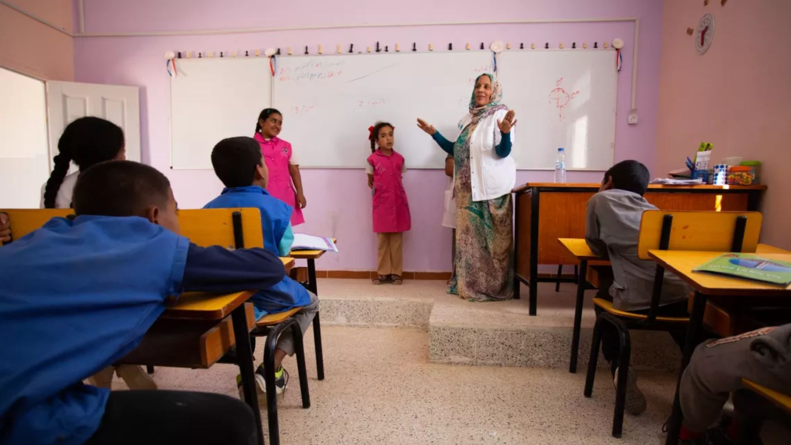
Prevenzione sanitaria materno-infantile ed emergenza alimentare
Con il sostegno economico della Regione Emilia-Romagna il progetto prevede l'acquisto di capre e dromedari da latte e il loro mantenimento nella wilaya di Smara e Dakhla. Gli animali vengono presi in carico dai responsabili di quartiere che scelgono le famiglie beneficiarie tra quelle più bisognose.
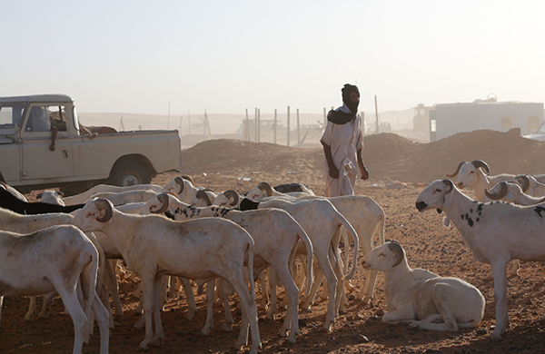
Pizzeria "Bella Dakhla"
Il progetto ha previsto la costruzione e l'avvio della pizzeria che ora due giovani della Wilaya di Dakhla gestiscono in maniera autonoma. I prodotti della pizzeria sono consumati come merende nelle scuola della Wilaya e dagli studenti della scuola di inglese.
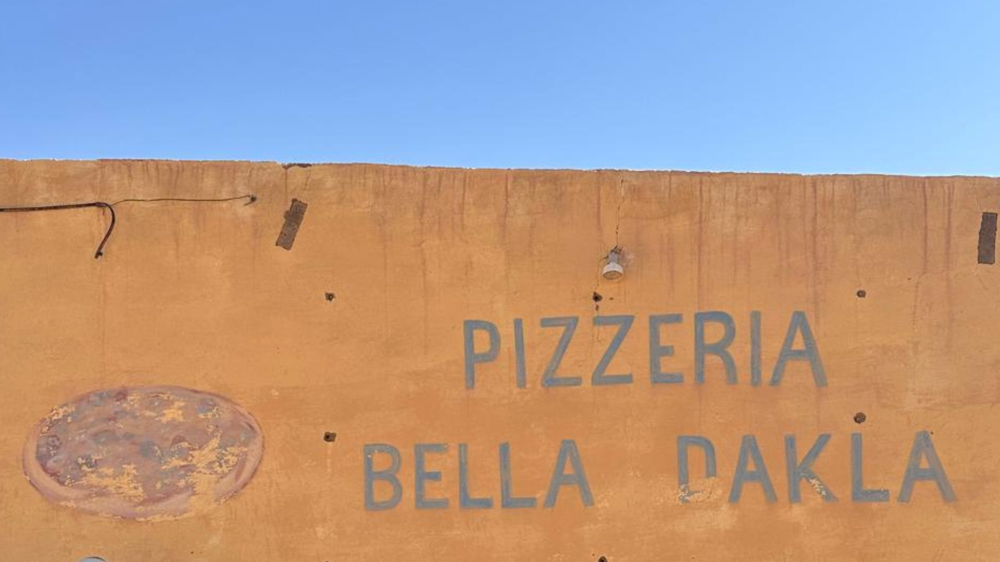
Sahara Marathon - Maratona di solidarietà internazionale
Da anni siamo i promotori per l'Italia della "SAHARA MARATHON", evento internazionale che si svolge dal 2000 nei campi profughi Saharawi in occasione del'anniversario della proclamazione della Repubblica Araba Saharawi Democratica (27 febbraio). È un evento sportivo nato con l'intento di dimostrare solidarietà al popolo Saharawi. Oltre all'appoggio organizzativo nei campi, l'associazione realizza viaggi per i gruppi che intendono partire dall'Italia per partecipare alla gara e conoscere al contempo la realtà di questo popolo. Dal 2004 l'organizzazione fa parte del Circuito nazionale delle Ecomaratone, un coordinamento di Associazioni sportive che si occupa di competizioni che individuano nella corsa in ambienti naturali uno dei modi migliori per favorire la conoscenza, promuovere il rispetto e valorizzare le risorse culturali, naturali e umane dei luoghi in cui si svolgono.
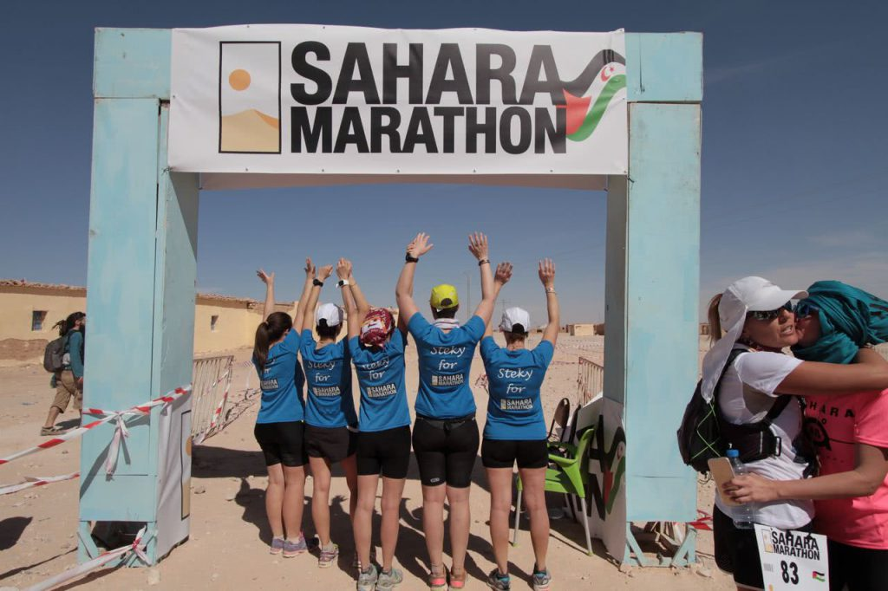
In Italia
Le attività in Italia sono prevalentemente volte a dare sostegno e far conoscere la causa popolo Saharawi, a sensibilizzare la popolazione e le istituzioni italiane rispetto alle violazioni dei diritti umani che vengono perpetrate nei territori occupati dal Marocco, alle difficili condizioni che vengono vissute nei campi profughi in Algeria, tutto al fine di fare pressione per una soluzione politica che preveda l'autodeterminazione.
Accoglienza bambini
Il progetto, all'interno del Programma "BAMBINI SAHARAWI – AMBASCIATORI DI PACE", prevede che i nostri piccoli ospiti, bambini tra i 6 e i 12 anni, siano ospitati in strutture (scuole, ostelli, agriturismi...) con la collaborazione delle amministrazioni locali e degli enti pubblici e privati che si rendono disponibili, e seguiti da accompagnatori Saharawi e da volontari dell'associazione per tutto il periodo. L'obiettivo è quello di offrire per il breve soggiorno estivo condizioni di vita migliori dal punto di vista climatico (durante l'estate nel paese d'origine le temperature raggiungono valori estremi), da quello alimentare e sanitario, nonché sensibilizzare popolazione e istituzioni con momenti di incontro e scambio culturale, attraverso attività ludico ricreative ed informative aperte alla cittadinanza.
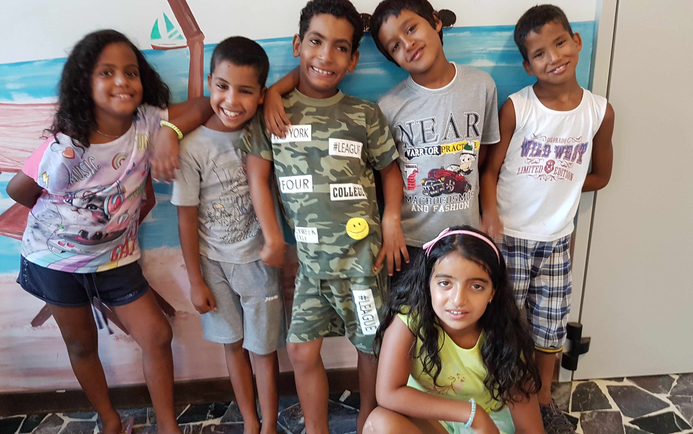
Diritti umani
Le iniziative e le attività che realizziamo sono volte a dar voce alla resistenza popolare, non violenta, che protesta contro la violazione sistematica dei diritti fondamentali nei Territori Occupati da parte del governo marocchino, che risponde contro i manifestanti in maniera violentissima, così come denunciato da Amnesty International, Human Rights Watch e dall'apposita commissione dell'ONU (feriti, maltrattamenti, arresti arbitrari, casi di tortura).
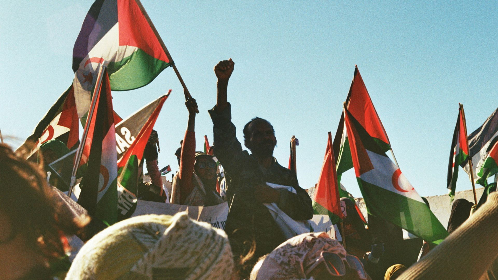
Sensibilizzazione e raccolte fondi
Si promuovono momenti d'informazione, sensibilizzazione e divulgazione in occasione di manifestazione ed eventi. Si creano anche occasioni per raccogliere risorse strumentali alla realizzazione dei progetti: ormai diventati appuntamenti fisso, a primavera la raccolta fondi con le uova di Pasqua (con sorprese confezionate nei campi e il cui ricavato serve a finanziare l'accoglienza estiva) e in inverno con le cioccolate di Natale.
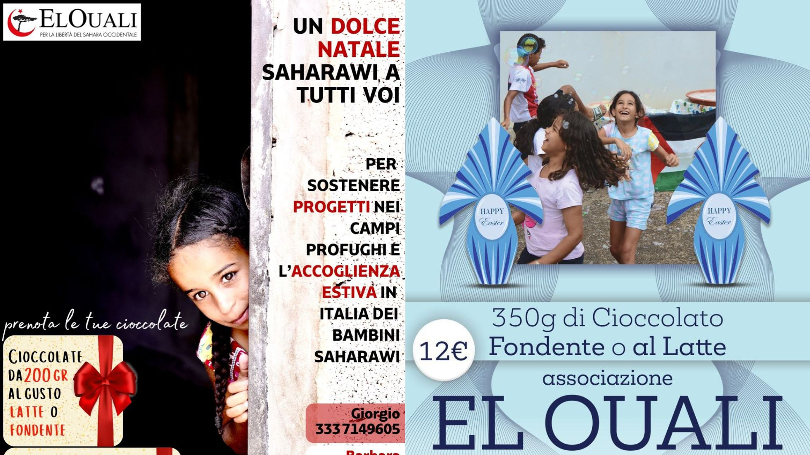
Partnership
Molte delle attività sono realizzate grazie al partenariato e alla rete che si è costruita negli anni con soggetti istituzionali e del mondo del volontariato. Tra questi, solo per citare i partner storici, ci sono: Istituzioni (la Regione Emilia Romagna, la Provincia di Bologna, l'Associazione dei comuni di Terre d'acqua, i comuni di Bentivoglio, Bologna, Ravenna, Cervia, Sasso Marconi, Sala Bolognese, Sant'Agata Bolognese, San Giorgio di Piano), Realtà Saharawi (Fronte Polisario, Ong e associazioni locali), Associazioni del mondo del volontariato e realtà locali (Coordinamento Regionale Emilia Romagna delle Associazioni di solidarietà con il Popolo Saharawi, Peacegame, Sahara Project Association di Madrid, Arterego, Yoda, Giardini del guasto, Associazione Senza il Banco, Ecomaratona del Chianti, Società Cooperativa Sociale Arcobaleno, Centro recupero Fauna selvatica Monte Adone, strutture sportive bolognesi).
Chi sono i Saharawi
L'origine del popolo Saharawi risale all'incontro tra i berberi che abitavano il deserto del Sahara e gli arabi Maqil stabilitisi nella regione dell'attuale Sahara Occidentale nel XIII secolo. Da sempre questo popolo nomade è organizzato in modo autonomo, con lingua propria (hassanya), cultura e organizzazione politica e sociale.
Con il riconoscimento dell'ONU al diritto dei popoli all'autodeterminazione, dal 1963 il Sahara Occidentale, ex colonia spagnola, viene incluso nella lista dei territori a cui tale principio deve essere applicato. Si decide quindi di indire un referendum, ma nel 1975 il Marocco occupa il territorio e inizia una guerra. Da allora i Saharawi vivono dispersi e divisi: una parte rimane nei territori occupati dal Marocco, un'altra fugge in Europa e la parte più numerosa (circa 200.000 persone) vive in campi di rifugiati nel deserto Algerino, nei pressi di Tindouf.
Il 27 Febbraio 1976 il Fronte Polisario proclama la nascita della Repubblica Araba Saharawi Democratica in esilio.
Negli anni '80, il Marocco costruisce un muro minato lungo 2700 km, che divide il Sahara Occidentale occupato dai territori liberati.
Nel 1991 il Marocco e il Fronte Polsario firmano il "cessate il fuoco" e stabiliscono un referendum per decretare l'indipendenza del Paese. Tuttavia il Marocco continua a impedire la realizzazione del referendum, rifiutando qualsiasi dibattito. Dal novembre 2020, è ripreso il conflitto armato tra il Marocco e il Fronte Polisario.
Sostienici
IT46G0538702409000000986412
91193730370
Contatti
Per informazioni, collaborazioni o per conoscere meglio le attività dell'associazione, puoi contattarci attraverso i riferimenti qui sotto.